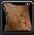
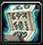
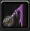

| Deep Delve (Debuff) |
| Chronoboon Displacer |

| Locations |
Spirit of Zandalar now applies to all players in Stranglethorn Vale (but not inside a Zul'Gurub instance), not just Yojamba Isle and Booty Bay.
| Sayge's Dark Fortunes |
| Full Moon Fervour (Buff) |
| Flask of Chromatic Resistance |
| Tier 0 and 0.5 Sets |
| Prismcharm |
| Sayge's Dark Fortune of Resistance |
| Racial Traits |

| Scrolls |
| Moist Towelette |
| New Potions |
| Vellums |
| Enhancement Kits |
| Silk Towelette |
| Shimmering Broth |

| Spiteful Poison |
| Hyjal Nectar |